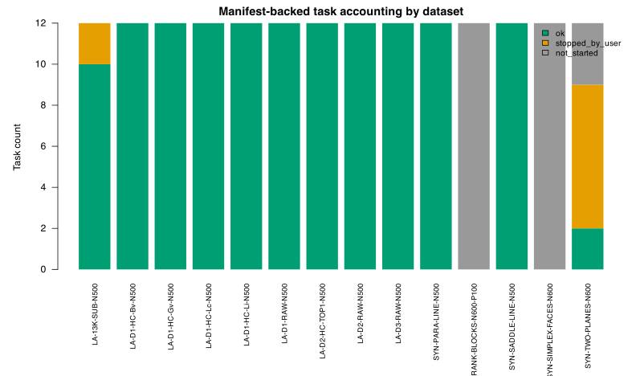
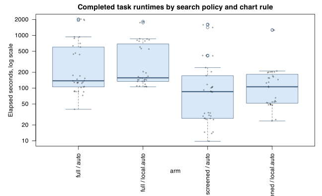
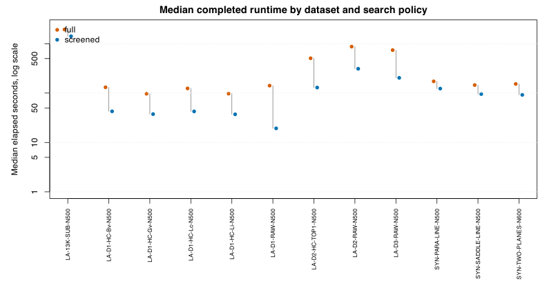
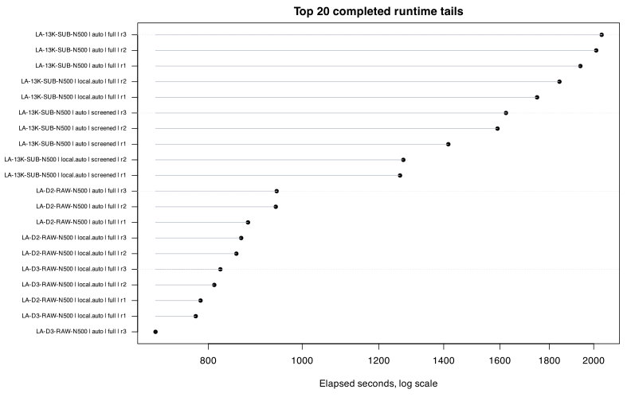

The scripts and supervisor survived until manual stop: 132 of 168 planned tasks completed with status ok, 9 active tasks were intentionally marked stopped_by_user, and 27 tasks were not started. No task recorded error, nonfinite_fit, or timeout status before the stop.
Runtime tails were substantial. Among completed tasks, median elapsed time was 132 seconds and the maximum completed elapsed time was 2038 seconds. The slowest completed rows came from the VALENCIA 13k subset and high-support full-search rows.
Memory was not continuously instrumented in the run artifacts. The report can say that logs/statuses did not show OOM, killed, timeout, or memory-error events, but it cannot reconstruct per-task peak RSS. The corrected S3R run should add explicit memory telemetry.
Each planned task is one PS-LPS fit on a frozen P7X first-batch asset, with factors for repetition, chart-dimension rule, and local-candidate search policy. Because this report is manifest-backed, rows without a status file are counted as not_started.
| status | n |
|---|---|
| not_started | 27 |
| ok | 132 |
| stopped_by_user | 9 |

| search_policy | chart_dim_rule | status | n |
|---|---|---|---|
| full | auto | not_started | 6 |
| screened | auto | not_started | 7 |
| full | local.auto | not_started | 7 |
| screened | local.auto | not_started | 7 |
| full | auto | ok | 34 |
| screened | auto | ok | 34 |
| full | local.auto | ok | 32 |
| screened | local.auto | ok | 32 |
| full | auto | stopped_by_user | 2 |
| screened | auto | stopped_by_user | 1 |
| full | local.auto | stopped_by_user | 3 |
| screened | local.auto | stopped_by_user | 3 |
Elapsed time is wall-clock task duration in seconds from each task status JSON or completed result summary. These timings are useful for sizing the corrected seed-matched S3R run even though accuracy deltas from this run are not valid.



| task_id | dataset_id | repetition | chart_dim_rule | search_policy | selected_cv_rmse_observed | selected_support_size | selected_lambda_sync | local_candidates_evaluated | elapsed_sec |
|---|---|---|---|---|---|---|---|---|---|
| s3r_0105__LA_13K_SUB_N500__r03__auto__full | LA-13K-SUB-N500 | 3 | auto | full | 0.11 | 35 | 90 | 21 | 2038 |
| s3r_0101__LA_13K_SUB_N500__r02__auto__full | LA-13K-SUB-N500 | 2 | auto | full | 0.1064 | 26 | 90 | 21 | 2012 |
| s3r_0097__LA_13K_SUB_N500__r01__auto__full | LA-13K-SUB-N500 | 1 | auto | full | 0.1082 | 35 | 90 | 21 | 1938 |
| s3r_0103__LA_13K_SUB_N500__r02__local_auto__full | LA-13K-SUB-N500 | 2 | local.auto | full | 0.1081 | 26 | 90 | 21 | 1844 |
| s3r_0099__LA_13K_SUB_N500__r01__local_auto__full | LA-13K-SUB-N500 | 1 | local.auto | full | 0.1099 | 25 | 90 | 21 | 1748 |
| s3r_0106__LA_13K_SUB_N500__r03__auto__screened | LA-13K-SUB-N500 | 3 | auto | screened | 0.1111 | 35 | 90 | 21 | 1623 |
| s3r_0102__LA_13K_SUB_N500__r02__auto__screened | LA-13K-SUB-N500 | 2 | auto | screened | 0.1096 | 34 | 90 | 21 | 1591 |
| s3r_0098__LA_13K_SUB_N500__r01__auto__screened | LA-13K-SUB-N500 | 1 | auto | screened | 0.1111 | 35 | 90 | 21 | 1415 |
| s3r_0104__LA_13K_SUB_N500__r02__local_auto__screened | LA-13K-SUB-N500 | 2 | local.auto | screened | 0.1081 | 26 | 90 | 21 | 1272 |
| s3r_0100__LA_13K_SUB_N500__r01__local_auto__screened | LA-13K-SUB-N500 | 1 | local.auto | screened | 0.1114 | 26 | 90 | 21 | 1262 |
| s3r_0069__LA_D2_RAW_N500__r03__auto__full | LA-D2-RAW-N500 | 3 | auto | full | 0.112 | 34 | 30 | 21 | 941.1 |
| s3r_0065__LA_D2_RAW_N500__r02__auto__full | LA-D2-RAW-N500 | 2 | auto | full | 0.1056 | 30 | 30 | 21 | 939.1 |
| s3r_0061__LA_D2_RAW_N500__r01__auto__full | LA-D2-RAW-N500 | 1 | auto | full | 0.1166 | 31 | 30 | 21 | 879.1 |
| s3r_0071__LA_D2_RAW_N500__r03__local_auto__full | LA-D2-RAW-N500 | 3 | local.auto | full | 0.1612 | 30 | 0.0003333 | 21 | 865 |
| s3r_0067__LA_D2_RAW_N500__r02__local_auto__full | LA-D2-RAW-N500 | 2 | local.auto | full | 0.148 | 30 | 0.0003333 | 21 | 855.1 |
| s3r_0095__LA_D3_RAW_N500__r03__local_auto__full | LA-D3-RAW-N500 | 3 | local.auto | full | 0.154 | 16 | 30 | 21 | 823.2 |
| s3r_0091__LA_D3_RAW_N500__r02__local_auto__full | LA-D3-RAW-N500 | 2 | local.auto | full | 0.1597 | 25 | 0.001 | 21 | 811.4 |
| s3r_0063__LA_D2_RAW_N500__r01__local_auto__full | LA-D2-RAW-N500 | 1 | local.auto | full | 0.1884 | 26 | 0.001 | 21 | 785.3 |
| s3r_0087__LA_D3_RAW_N500__r01__local_auto__full | LA-D3-RAW-N500 | 1 | local.auto | full | 0.1554 | 23 | 0.01 | 21 | 776.4 |
| s3r_0093__LA_D3_RAW_N500__r03__auto__full | LA-D3-RAW-N500 | 3 | auto | full | 0.1464 | 17 | 90 | 21 | 705.6 |
| s3r_0085__LA_D3_RAW_N500__r01__auto__full | LA-D3-RAW-N500 | 1 | auto | full | 0.137 | 17 | 90 | 21 | 634.4 |
| s3r_0075__LA_D2_HC_TOP1_N500__r01__local_auto__full | LA-D2-HC-TOP1-N500 | 1 | local.auto | full | 0.1319 | 22 | 1 | 21 | 602.3 |
| s3r_0089__LA_D3_RAW_N500__r02__auto__full | LA-D3-RAW-N500 | 2 | auto | full | 0.1255 | 16 | 10 | 21 | 602.3 |
| s3r_0083__LA_D2_HC_TOP1_N500__r03__local_auto__full | LA-D2-HC-TOP1-N500 | 3 | local.auto | full | 0.1332 | 27 | 1 | 21 | 562.6 |
| s3r_0079__LA_D2_HC_TOP1_N500__r02__local_auto__full | LA-D2-HC-TOP1-N500 | 2 | local.auto | full | 0.1262 | 35 | 0.1 | 21 | 550.9 |
Timeout count detected from status/error fields: 0. Worker-level error/nonfinite count: 0. Manual stop count: 9.
The Python supervisor log contains 0 timeout lines and 0 kill/memory/OOM-like lines. Worker logs were quiet except for the intentional stopped status updates. This supports the narrow conclusion that the worker/supervisor design survived normal completed rows until manual stop.
The completed result RDS files contain local-candidate counts and per-fit timing telemetry. Candidate counts distinguish the exact full support search from screened search, while phase timings help identify where future profiling should focus. These diagnostics are descriptive only because the run was stopped and seed pairing was flawed.
| search_policy | chart_dim_rule | dataset_id | n | median_elapsed_sec | p90_elapsed_sec | max_elapsed_sec | median_candidates_evaluated |
|---|---|---|---|---|---|---|---|
| full | auto | LA-13K-SUB-N500 | 3 | 2012 | 2033 | 2038 | 21 |
| screened | auto | LA-13K-SUB-N500 | 3 | 1591 | 1617 | 1623 | 21 |
| full | local.auto | LA-13K-SUB-N500 | 2 | 1796 | 1834 | 1844 | 21 |
| screened | local.auto | LA-13K-SUB-N500 | 2 | 1267 | 1271 | 1272 | 21 |
| full | auto | LA-D1-HC-Bv-N500 | 3 | 126.4 | 128 | 128.4 | 21 |
| screened | auto | LA-D1-HC-Bv-N500 | 3 | 33.66 | 34.06 | 34.16 | 21 |
| full | local.auto | LA-D1-HC-Bv-N500 | 3 | 133.9 | 134.5 | 134.7 | 21 |
| screened | local.auto | LA-D1-HC-Bv-N500 | 3 | 52.22 | 52.73 | 52.86 | 21 |
| full | auto | LA-D1-HC-Gv-N500 | 3 | 86.36 | 87.58 | 87.89 | 21 |
| screened | auto | LA-D1-HC-Gv-N500 | 3 | 26.54 | 26.65 | 26.67 | 21 |
| full | local.auto | LA-D1-HC-Gv-N500 | 3 | 106.9 | 107.5 | 107.7 | 21 |
| screened | local.auto | LA-D1-HC-Gv-N500 | 3 | 48.78 | 49.19 | 49.29 | 21 |
| full | auto | LA-D1-HC-Lc-N500 | 3 | 105.4 | 106.5 | 106.7 | 21 |
| screened | auto | LA-D1-HC-Lc-N500 | 3 | 29.61 | 30.37 | 30.56 | 21 |
| full | local.auto | LA-D1-HC-Lc-N500 | 3 | 142.8 | 143.3 | 143.4 | 21 |
| screened | local.auto | LA-D1-HC-Lc-N500 | 3 | 54.71 | 55.36 | 55.53 | 21 |
| full | auto | LA-D1-HC-Li-N500 | 3 | 84.98 | 85.64 | 85.8 | 21 |
| screened | auto | LA-D1-HC-Li-N500 | 3 | 25.31 | 26.42 | 26.7 | 21 |
| full | local.auto | LA-D1-HC-Li-N500 | 3 | 110.2 | 116.9 | 118.6 | 21 |
| screened | local.auto | LA-D1-HC-Li-N500 | 3 | 48.29 | 55.63 | 57.47 | 21 |
| full | auto | LA-D1-RAW-N500 | 3 | 124.1 | 127.6 | 128.5 | 21 |
| screened | auto | LA-D1-RAW-N500 | 3 | 14.59 | 14.68 | 14.7 | 21 |
| full | local.auto | LA-D1-RAW-N500 | 3 | 156.1 | 157.3 | 157.6 | 21 |
| screened | local.auto | LA-D1-RAW-N500 | 3 | 25.28 | 57.33 | 65.35 | 21 |
| full | auto | LA-D2-HC-TOP1-N500 | 3 | 441.5 | 458.5 | 462.7 | 21 |
| screened | auto | LA-D2-HC-TOP1-N500 | 3 | 103.2 | 103.9 | 104 | 21 |
| full | local.auto | LA-D2-HC-TOP1-N500 | 3 | 562.6 | 594.4 | 602.3 | 21 |
| screened | local.auto | LA-D2-HC-TOP1-N500 | 3 | 156.5 | 162.2 | 163.6 | 21 |
| full | auto | LA-D2-RAW-N500 | 3 | 939.1 | 940.7 | 941.1 | 21 |
| screened | auto | LA-D2-RAW-N500 | 3 | 415.5 | 416.3 | 416.4 | 21 |
| full | local.auto | LA-D2-RAW-N500 | 3 | 855.1 | 863 | 865 | 21 |
| screened | local.auto | LA-D2-RAW-N500 | 3 | 202.9 | 209.6 | 211.3 | 21 |
| full | auto | LA-D3-RAW-N500 | 3 | 634.4 | 691.3 | 705.6 | 21 |
| screened | auto | LA-D3-RAW-N500 | 3 | 204.7 | 236.6 | 244.6 | 21 |
| full | local.auto | LA-D3-RAW-N500 | 3 | 811.4 | 820.9 | 823.2 | 21 |
| screened | local.auto | LA-D3-RAW-N500 | 3 | 202.7 | 204 | 204.3 | 21 |
| full | auto | SYN-PARA-LINE-N500 | 3 | 170.8 | 173.9 | 174.7 | 21 |
| screened | auto | SYN-PARA-LINE-N500 | 3 | 106.6 | 115 | 117.1 | 21 |
| full | local.auto | SYN-PARA-LINE-N500 | 3 | 194.5 | 203.4 | 205.6 | 21 |
| screened | local.auto | SYN-PARA-LINE-N500 | 3 | 145.1 | 165 | 169.9 | 21 |
| search_policy | chart_dim_rule | n | median_total.elapsed.sec | median_phase_frames_sec | median_phase_sync_rows_sec | median_phase_system_cache_sec | median_phase_fold_component_cache_sec | median_phase_full_component_cache_sec | median_phase_lambda_search_sec | median_phase_final_solve_sec | median_evaluated_lambda_count | median_unique_lambda_count | median_boundary_expansion_count |
|---|---|---|---|---|---|---|---|---|---|---|---|---|---|
| full | auto | 34 | 6.196 | 0.288 | 0.175 | 0.016 | 1.092 | 0.2175 | 4.296 | 0.1075 | 8 | 8 | 2 |
| screened | auto | 34 | 6.608 | 0.2645 | 0.1675 | 0.0215 | 1.165 | 0.2395 | 4.854 | 0.096 | 8 | 8 | 2 |
| full | local.auto | 32 | 6.865 | 0.295 | 0.159 | 0.015 | 1.028 | 0.198 | 4.508 | 0.093 | 8 | 8 | 2 |
| screened | local.auto | 32 | 7.292 | 0.2595 | 0.1705 | 0.0165 | 1.133 | 0.244 | 4.822 | 0.1015 | 8 | 8 | 2 |
The run did not record per-task maximum RSS, peak system memory, swap pressure, or sampled memory over time. The only artifact-backed memory statement is negative evidence: no status/log entries indicated OOM, killed workers, jetsam, or timeout before manual stop. The corrected S3R run should add either /usr/bin/time -l around worker tasks or a supervisor-side periodic ps sampler that records PID, RSS, CPU, task id, and timestamp.
Generated tables are in /Users/pgajer/current_projects/geosmooth/split_handoffs/ps_lps_s3r_light_20260607_001/tables. Figures are in /Users/pgajer/current_projects/geosmooth/split_handoffs/ps_lps_s3r_light_20260607_001/reports/figures_s3r_smoke.
/Users/pgajer/current_projects/geosmooth/split_handoffs/ps_lps_s3r_light_20260607_001/tables/s3r_smoke_manifest_backed_status.csv/Users/pgajer/current_projects/geosmooth/split_handoffs/ps_lps_s3r_light_20260607_001/tables/s3r_smoke_completed_task_summary.csv/Users/pgajer/current_projects/geosmooth/split_handoffs/ps_lps_s3r_light_20260607_001/tables/s3r_smoke_runtime_summary_by_dataset_policy.csv/Users/pgajer/current_projects/geosmooth/split_handoffs/ps_lps_s3r_light_20260607_001/tables/s3r_smoke_runtime_tail_top25.csv/Users/pgajer/current_projects/geosmooth/split_handoffs/ps_lps_s3r_light_20260607_001/tables/s3r_smoke_phase_timing_summary.csvRelevant audit context:
/Users/pgajer/current_projects/geosmooth/split_handoffs/p7x_s3r_audit_2026-06-07.md/Users/pgajer/current_projects/geosmooth/split_handoffs/p7x_s3r_audit_response_2026-06-07.md/Users/pgajer/current_projects/geosmooth/split_handoffs/ps_lps_s3r_light_20260607_001/STOPPED_PROFILING_ONLY_2026-06-07.md